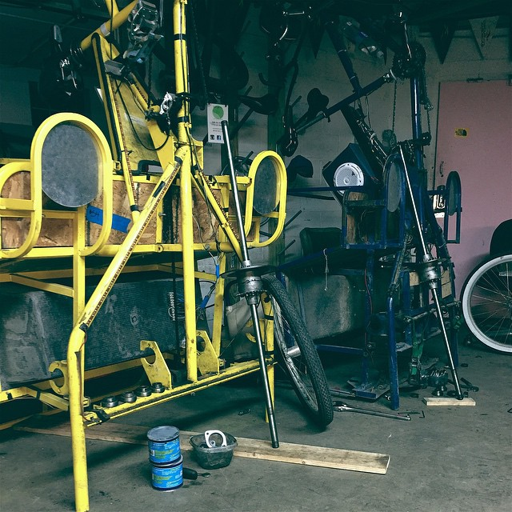
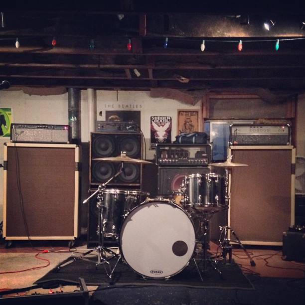

-

-

I'm real bad at writing these thigns. Things, too.
I grew up in Baton Rouge, Louisiana. I went to a lot of music festivals and Mardi Gras and everything you would expect from growing up in Southern Lousiana. As fun as that could be, I wanted to see a little more of the world. I'd already been travelling the states for a couple years so i was lucky enough to have some friends in Texas. Right before my 22nd birthday i moved to Austin with my best friend. Show me a water spot and i'll go there. In fact, let me know if you'd like to buy me a paddleboard. Just sayin'.
------------------------------------------------------
Below you'll see a wonderful picture of my Grandmother. She didn't tell us she'd booked a parasail.
She's kind of a badass.
Ive worked all sort of odd jobs over the years. Many you would expect: barista, bartender, server, drone. The past few years though I've been a part of a really cool community. I own/operate a pedicab in downtown ATX.
It's an amazing experience. Every night I'm whipping through cars and pedestrians. Blasting music from the speakers I've installed to heighten the ride for myself and my passengers. You meet so many people from all over the world, and you get to be a part of their memories.
And if you're good enough, you'll create the ones they tell all their friends back home about:
I'm massively influenced by heavy music, my first concert was Pantera when i was 14 and i was hooked. My poor mother brought me. Aside from heavier artists I try to find new ideas and thoughts in any genre.
I've been playing music since i was 10 years old. The band director at my middle school tried his hardest to push me into a horn section; i knew then he was trying to spare my parents. I didn't care.
I was lucky enough to spend 6 months last year on the road. Almost nonstop. I had the forethought to start keeping a journal. Maybe you'll read some of it on this page.